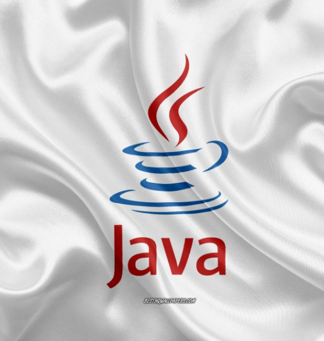

Java is a robust, platform-independent programming language renowned for its versatility, security, and portability. Developed by James Gosling at Sun Microsystems in the mid-1990s, Java quickly rose to prominence due to its ability to write once and run anywhere (WORA), making it ideal for developing cross-platform applications. At its core, Java is an object-oriented language that emphasizes simplicity, readability, and maintainability. Its syntax is similar to C++ but eliminates certain complexities such as explicit memory management and pointers, making it more accessible to developers. Java's platform independence is facilitated by its bytecode compilation model. Java source code is compiled into platform-independent bytecode, which can be executed on any Java Virtual Machine (JVM), regardless of the underlying hardware and operating system. This feature enables Java applications to run consistently across different environments, from desktop computers to mobile devices and embedded systems. Furthermore, Java offers a rich set of standard libraries and APIs, known collectively as the Java Development Kit (JDK), which provides developers with a wide range of tools and utilities for building diverse applications. The extensive ecosystem of third-party libraries and frameworks further enhances Java's capabilities, enabling developers to leverage existing code and accelerate development processes. Java's robust security features, including its sandbox environment and built-in security manager, make it a popular choice for developing enterprise-grade and mission-critical applications, such as web servers, financial systems, and enterprise software solutions. Java's combination of platform independence, object-oriented paradigm, rich standard library, and robust security features make it a preferred language for a wide range of development projects, from enterprise applications to web development and mobile applications. Its versatility and reliability continue to make it a cornerstone of the modern software development landscape.
Features of Java
- Simple and Easy to Learn
- Platform Independence
- Object-Oriented Programming (OOP)
- Robust and Secure
- Large Standard Library
- Multithreading
- High Performance
- Dynamic and Extensible
- Community Support and Ecosystem
Why learn Java?
- Platform Independence
- Vast Job Opportunities
- Strong Community Support
- Object-Oriented Programming (OOP)
- Rich Standard Library
- Scalability and Performance
- Industry Adaption
Advantages of Java
- Platform independent
- Object-Oriented
- Security
- Large community
- Enterprise-level applications
- Performance
- Memory management
To learn more about Java Language, here are some resources:
Java Language ONLINE MATERIAL